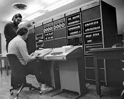
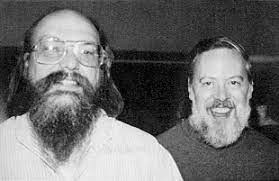
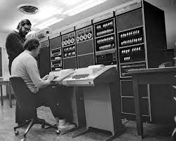
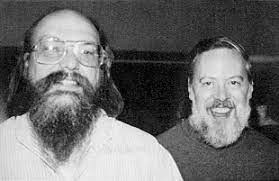

Dennis Ritchie
 



Dennis Ritchie (September 9, 1941 – October 12, 2011)
Dennis Ritchie is most well-known for creating the C programming language
and, with long-time colleague Ken Thompson, the Unix operating system
and B programming language.
Ritchie and Thompson were awarded the Turing Award from the ACM in 1983,
the Hamming Medal from the IEEE in 1990 and the National Medal of Technology
from President Bill Clinton in 1999. Ritchie was the head of Lucent Technologies
System Software Research Department when he retired in 2007. He was the "R" in K&R C,
and commonly known by his username dmr.
| Knowns for | Awards |
|---|---|
| ALTRAN | 1982 - IEEE Emanuel R. Piore Award |
| B | 1983 - Turing Award |
| BCPL | 1998 - National Medal of Technology |
| C | 1990 - IEEE Richard W. Hamming Medal |
| Multics | 1994 - Computer Pioneer Award |
| Unix | 1997 - Computer History Museum Fellow |
| 2003 - Harold Pender Award | |
| 2011 - Japan Prize |
UNIX is basically a simple operating system, but you have to be a genius to understand the simplicity.
Dennis Ritchie